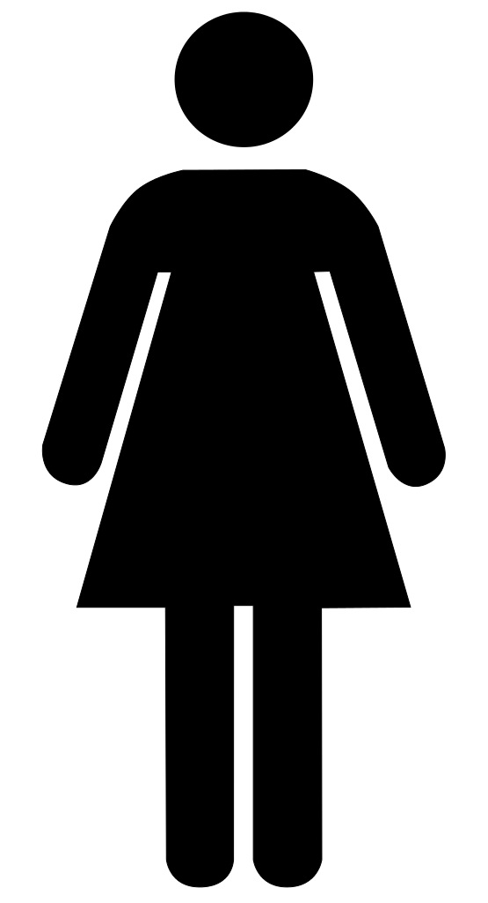
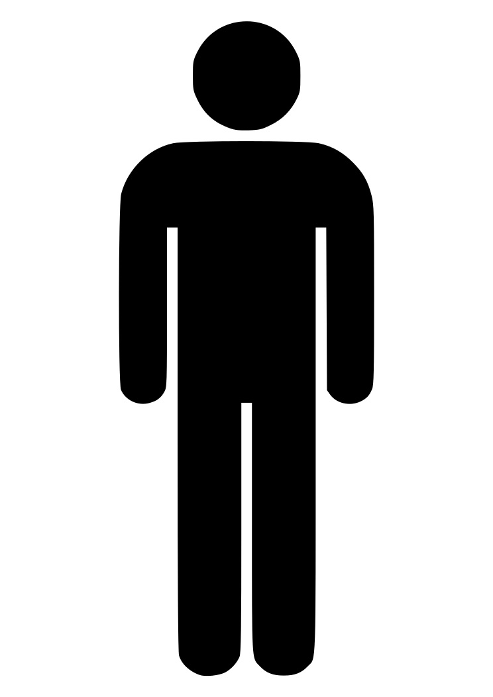

당신의 목 상태는 괜찮으신가요?
Stop Turtleneck은
Desktop과 Notebook의 웹캠을 이용하여 이용자의 자세를 판단하는 서비스입니다.
- 웹캠의 카메라 접근 권한을 허용해주십시오
- 웹캠이 시작될 때까지 대기하신 후, 가이드라인에 맞춰 바른 자세로 앉아주십시오
- stop turtleneck은 AI 모델을 이용하여 유저의 자세를 10초 간격으로 측정합니다.

Team
Team
STOP TURTLENECK 프로젝트에 참여한 BE 전공자들입니다

KIM JINYOUNG
RESERCHIST거북목 판단을 위한 AI 모델 알고리즘 연구

KWON YOUNGWOO
Product ManagerSTOP TUETLENECK 웹페이지 개발

CHOI WOOBIN
Data analyst데이터 수집 및 분석
Contact
Contact
BE 전문가들에게 연락하세요. 당신에게 도움을 줄 것입니다.
Our Address
서울 중구 다동88
Email Us
TURTLENECK@gmail.com
Call Us
+1 1234 5678